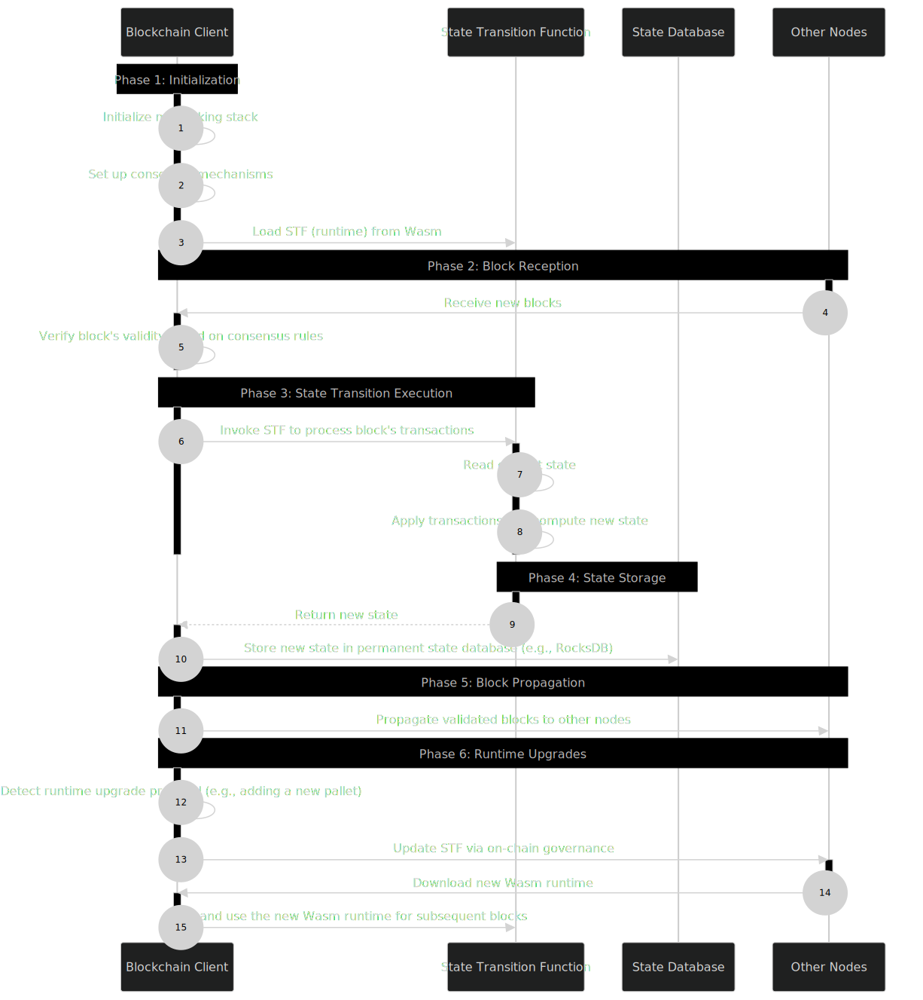

Rust State Machine
Dot Code School Solutions
This repository contains my solutions for the DotCodeSchool Courses. It also contains some notes I made along the way.
1. State Machine Concept:
A state machine is a computational model that can be in exactly one of a finite number of states at any given time. It transitions between these states based on specific rules or inputs. In computing, state machines are used to model systems with well-defined, predictable behavior.
2. State in Blockchain
2.1 Global State:
Represents the entire data of the blockchain at a specific point in time. This includes account balances, smart contract data, and more.
2.2 State Transition Function:
The rules that define how the blockchain moves from one state to another based on transactions.
3. State Transitions:
- Transactions cause state transitions
- Each transaction is like an input that moves the blockchain from one valid state to another.
- These transitions follow strict consensus rules.
- Every node in the network applies the same state transition logic to maintain consistency
4. Genesis State in Blockchains:
The Genesis State is the initial state of a blockchain. It represents the very first block, often referred to as "block 0" or the "genesis block." This block is unique because it is the only block that does not reference a previous block, as it is the starting point of the blockchain. It contains: Initial Accounts and Balances, Network Parameters, Smart Contracts and Code, and any Configuration Settings.
5. Traits
- Traits can contain within it two things:
- functions which must be implemented by the type
- associated types
- When you want to use a function or method that is defined within a trait, you need to ensure that the trait is in scope. This is because Rust requires explicit imports for trait methods to avoid ambiguity and to make the code more readable and maintainable.
6. Pallet
"Pallet" is a term specific to the Polkadot SDK, which refers to Rust modules which contain logic specific for your blockchain runtime.
7. &'static str
In Rust, &'static str is a type that represents a string slice with a 'static lifetime. A 'static lifetime means that the data is either embedded directly in the program's binary (like string literals) or is explicitly allocated to last for the entire program's execution.
8. Blockchain Client / Host
The blockchain client is the software component responsible for managing the network interactions, consensus mechanism, peer-to-peer communication, transaction propagation, block production, and overall coordination of the blockchain nodes.
9. State transition function / Runtime
The state transition function defines how the blockchain's state changes in response to transactions and blocks. It encapsulates the business logic, rules, and operations that govern the blockchain's behavior. (If applicable) Manages the execution and state of smart contracts.
10. Enums
- We use enums a lot in polkadot-sdk. Take this for an example:
pub enum RuntimeCall {
Balances(balances::Call<Runtime>),
}
pub enum Call<T: Config> {
Transfer { to: T::AccountID, amount: T::Balance },
}- In this case, we have a variant
RuntimeCall::Balances, which itself contains a typebalances::Call. This means we can access all the calls exposed bybalances:Callunder this variant. As we create more pallets or extend our calls (add more variants to the enumcallin our pallets), this nested structure will scale very well. We call theRuntimeCallan "outer enum", and thebalances::Callan "inter enum".
11. DotCodeSchool Lecture flow:
11.1 Balances Pallet:
- At the heart of a blockchain is a state machine.
- This Pallet will tell you: how much balance each user has, provide functions which allow users to transfer those balances, and even some low level functions to allow your blockchain system to manipulate those balances if needed.
- We can add state to our pallet by adding fields (like balances{BTreeMap}) into our Pallet struct.
- Add functions to our pallet to allow users to interact with the state.
11.2 System Pallet
- The System Pallet is a "meta"-pallet which stores all the metadata needed for your blockchain to function. For example, the current blocknumber or the nonce of users on your blockchain.
- This pallet does not need to expose any functions to end users, but can still play an important role in our overall state transition function.
- System Pallet needs to expose functions which allow us to access and modify the block number and the nonce.
- Block number: Your blockchain's blocknumber stored in the System Pallet.
- Nonce: In this context, each user on your blockchain has a nonce which gives a unique value to each transaction the user submits to the blockchain. We keep track of 'nonce':'count_of_transactions' in a BTreeMap.
11.3 Runtime Pallet
- You can think of the runtime as the accumulation of all logic which composes your state transition function. It will combine all of your pallets into a single object, and then expose that single object as the entry point for your users to interact with.
- The runtime contains the System Pallet and the Balances Pallet.
11.4 Using Named And Generic Types and making them configurable:
- We use named types to clearly define what a type represents. We make these named types generic so that we can use them with different types.
- We implement a
Configtrait with associated types. Then we can use a single generic parameterTin our structs and have a trait bound ofConfigonT. This way, we can access data types fromTlikeT::AccountIdandT::Balancein our structs. - We can also use Trait Inheritance to keep the repetition to a minimum like -
pub trait Config: crate::system::Config {}. However, we need to be aware of any Tight Coupling. In fact, with Substrate, all pallets are tightly coupled to the System Pallet, because the System Pallet provides all the meta-types for your blockchain system.
11.5 Support Pallet
- The
supportmodule parallels something similar to theframe_supportcrate that you would find in thePolkadot SDK. The reason theframe_supportcrate exists, is to allow multiple other crates use common types and trait, while avoiding cyclic dependencies, which is not allowed in Rust. - The first set of primitives provided by the support module are a set of structs that we need to construct a simple Block in a Blockchain. We keep the Block completely generic over the Header and Extrinsic type.
11.5.1 Block
A block is basically broken up into two parts: the header and a vector of extrinsics.
11.5.1.1 Header
The block header contains metadata about the block which is used to verify that the block is valid. In our simple state machine, we only store the blocknumber in the header, but real blockchains like Polkadot have:
- Parent Hash
- Block Number
- State Root
- Extrinsics Root
- Consensus Digests / Logs
11.5.1.2 Extrinsics
- In our simple state machine, extrinsics are synonymous with user transactions. Thus our extrinsic type is composed of a Call (the function we will execute) and a Caller (the account that wants to execute that function).Real world blockchains like Polkadot have many different types of extrinsics.
11.5.2 Dispatching Calls
- The runtime, acting as a single entrypoint for the whole state transition function needs to be able to route incoming calls to the appropriate functions in the appropriate pallets. For this, we need the
Dispatchtrait and theDispatchResult. - Runtime Calls are an accumulation of all the calls which are exposed to the world. This is useful as a
typeas we can have mappings likecallandcallerwhere thecallcould be of one of the types inRuntimeCalls. - We also define concrete types for the
Block,Header, andExtrinsictypes. - We implement the
Dispatchtrait for all pallets. Then we can use a nesteddispatchfunction to route calls to the appropriate pallet. This way when the pallet code gets updated, we don't have to update anything in the runtime as it would just forward the call to the updated dispatch function in the pallet.
11.6 Proof of Existence Pallet
- The Proof of Existence Pallet uses the blockchain to provide a secure and immutable ledger that can be used to verify the existence of a particular document or piece of data at a specific point in time as the blockchain acts as an immutable ledger whose history cannot be changed.
- We use a
BTreeMapfor storage here. In actual blockchains likePolkaDot, there usually is a storage layer that is used to store the data. Rather than having a map from accounts to some data, we will actually map the content we want to claim to the user who owns it. This construction of content -> account allows an account to be the owner of multiple different claims, but having each claim only be owned by one user. - Remember that when we create the
call enumin each pallet, we don't need to pass the caller data in the enum variants. Thecalleris provided by thedispatchlogic.
11.7 Macros in polkadot-sdk
All the pallets and the runtime follow a certain pattern and thus we can write and use macros for them.
11.7.1 The Call Macro
- The purpose of the
#[macros::call]macro is to automatically generate theenum Callfrom the functions of the pallet and the pallet levelDispatchlogic found in each Pallet. - We can place the
#[macros::call]attribute over ourimpl<T: Config> Pallet<T>where the callable functions are implemented. From there, the macro can parse the whole object, and extract the data it needs. Not all of your functions are intended to be callable, so you can isolate the functions which should be "callable" in their ownimpl<T: Config> Pallet<T>. - The Call macro has 2 main files:
- Parse:
- In order to generate the code that we want, we need to keep track of each
callable function(name of that function, each argument name and types) that the developer wants to expose through the Runtime and the name of thestructwhere those functions are implemented. Normally this isPallet, but we can allow the developer flexibility in their naming. - These things are tracked with
CallDefandCallVariantDef - Also, during the parsing process, we might want to check for certain consistencies in the code being parsed. In this case, we require that every callable function muse have
calleras their first parameter withtype T::AccountId. This checking logic is handled byfn check_caller_arg.
- In order to generate the code that we want, we need to keep track of each
- Expand:
- Once we have parsed all the data we need, generating the code is straight forward. If you jump down to
let dispatch_impl = quote!you will see a bunch of code that looks like the templates we used earlier in the tutorial. We just left markers where the macro generation logic should place all the information to write the code we need.
- Once we have parsed all the data we need, generating the code is straight forward. If you jump down to
- Parse:
- Rust provides the command
cargo expandwhich allows you to output the generated rust code after all macros have been applied to your project.
11.7.2 The Runtime Macro
- The purpose of the
#[macros::runtime]macro is to get rid of all of the boilerplate function we implemented for theRuntime, includingfn new()andfn execute_block(). Similar to theCallmacro, it also generates theenum RuntimeCalland all theDispatchlogic for re-dispatching to pallets. - NOTE: It appears that the
Runtimemacro and theCallmacro both get rid of theenum calland theDispatchlogic. - NOTE: Due to the quirks of using macros, our
RuntimeCallorCallenum (from theBalancesPallet) will have snake_case variants which exactly match the name of the fields in the Runtime struct. - We apply the
#[macros::runtime]attribute on top of the mainstruct Runtimeobject. - The Runtime macro has 2 main files:
- Parse:
- In order to generate the code we want, we need to keep track of: The name of the struct representing our Runtime. Usually this is
Runtime, but we provide flexibility to the developer, The list of Pallets included in ourRuntime, Their name, as specified by the user and The specific type for theirPallet, for examplebalances::Palletvsproof_of_existence::Pallet. - All of this information is tracked in the
RuntimeDefstruct. We are also checking that ourRuntimedefinition always contains theSystem Pallet, and does so as the first pallet in ourRuntimedefinition.
- In order to generate the code we want, we need to keep track of: The name of the struct representing our Runtime. Usually this is
- Expand:
- Starting with
let runtime_impl = quote!, you will see the entireimpl Runtimecode block has been swallowed into the macro. Since we know all the pallets in yourRuntime, we can automatically implement functions likenew(). Theexecute_blockfunction does not take advantage of any of the parsed data, but the code is completely boilerplate, so we hide it away. - We have another code block being generated with
let dispatch_impl = quote!which is theenum RuntimeCalland the implementation ofDispatchforRuntime.
- Starting with
- Parse: